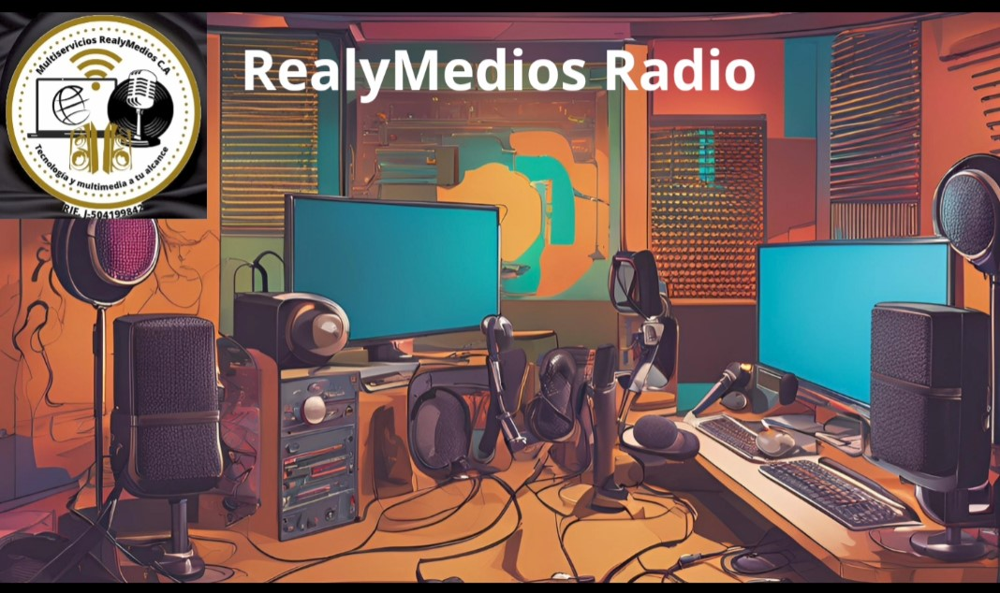
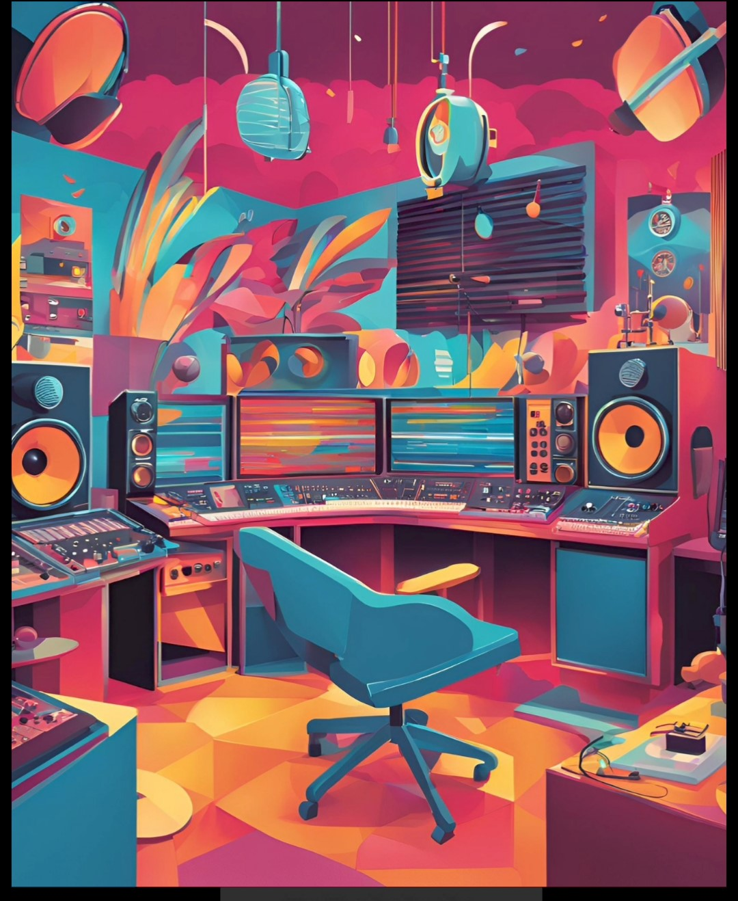

Tu Radio Real
Transmitiendo música variada las 24 horas del día para todos los oyentes.
En Periodo de Prueba...
Galería de Fotos


Podcasts
Episodio 1: Introducción a la Radio
Episodio 2: Entrevista Especial
Encuesta
¿Qué tipo de música prefieres?